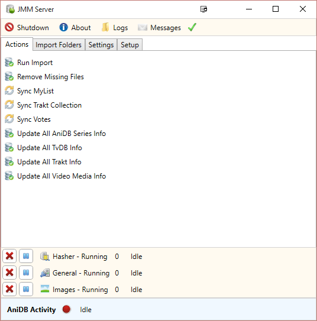

Actions Tab
As preivously mentioned, JMM uses multiple data gathering sites to download and complie data about the series in your collection. However JMM also provides you with the ability to uploading and downloading your metadata with various websites such as AniDB, MyAnimeList and Trakt.
Clicking the Actions tab in JMM server will show the following options for uploading and downloading your metadata.

Available Options
- Run Import - Will start scanning your selected import folders and add any new files to your collection.
- Remove Missing Files - Will scan your import folders and remove files no longer in your collection.
- Sync MyList - Will sync your collection metadata with your MyAnimeList account.
- Sync Trakt Collection - Will sync your collection metadata with your Trakt account.
- Sync Votes - Will sync your votes with your AniDB and MyAnimeList account.
- Update All AniDB Series Info - Will update all series AniDB info in your collection.
- Update All TvDB Info - Will update all series TvDB info in your collection.
- Update All Trakt Info - Will update all series Trakt info in your collection.
- Update All Video Media Info - Will update all technical details about the files in your collection.
Additional Information
- The time it takes to complete a task depends on your collection size.
- Clicking on an option multiple times will stack it. Depending on your colleciton size this could lead to a temporary ban.
- The taskbar at the bottom will keep track of your remaining tasks.
{kind=link}